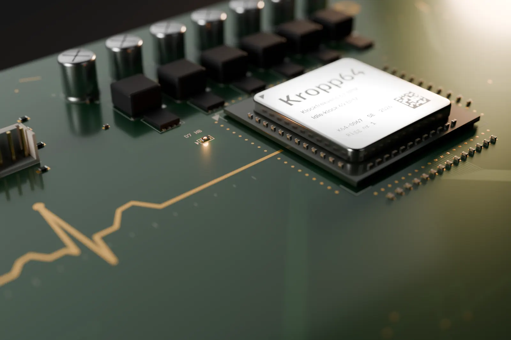
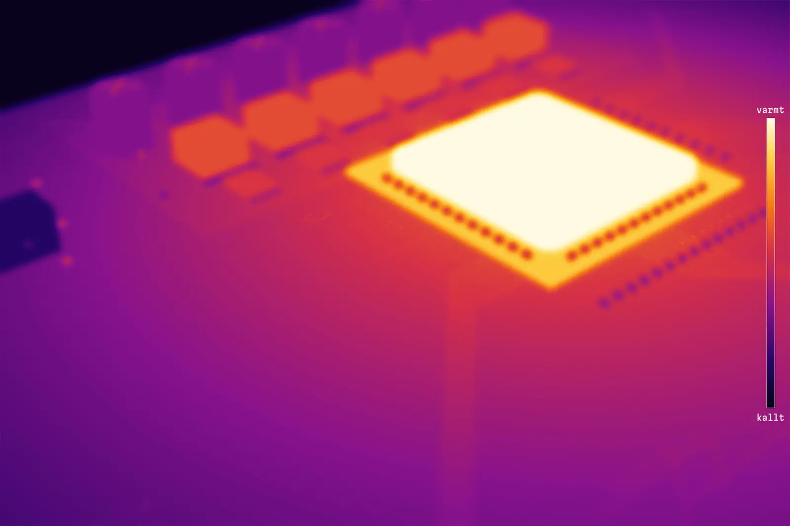

Kropp64 BIOS v1.0 demoläge, exempelvärden Klockfrekvens ........ 67 BPM OK Timingmarginal (HRV) . 53 ms OK Syremättnad .......... 97 % OK Minne, Mac mini ...... 9,1/16 GB OK Läkarteam ............ laddat OK Tryck F1 för att fortsätta, eller scrolla.
Sensorpanelen för din viktigaste rigg: dig själv.
Som AIDA64 och HWiNFO64, fast för kroppen. Pixel Watch, mobilen och en Mac mini läser av dig dygnet runt, och när något avviker svarar ett lokalt läkarteam av AI-agenter i en forumtråd. Ingen hälsodata lämnar huset.


Klockans sensorer, som en hårdvarumonitor
| Sensor | Aktuellt | Min | Max | Medel |
|---|---|---|---|---|
| Hjärta (Pixel Watch) | ||||
| Klockfrekvens | 72 BPM | 48 BPM | 156 BPM | 66 BPM |
| Idle-klock (vilopuls) | 49 BPM | 49 BPM | 50 BPM | 50 BPM |
| Timingmarginal (HRV) | 53 ms | 38 ms | 58 ms | 47 ms |
| Andning | ||||
| Andningsfrekvens | 15,8 /min | 12,5 /min | 17,0 /min | 14,8 /min |
| SpO2 | 97 % | 94 % | 98 % | 96 % |
| Kylning | ||||
| Hudtemperatur | 33,22 °C | 33,10 °C | 34,79 °C | 33,78 °C |
| Headroom | 45 av 100 | - | - | - |
| Last | ||||
| Steg | 18 435 steg | 11 613 | 20 127 | 16 152 |
| Uptime vid datorn | 339 min | - | - | - |
Pixel Watch, mobilen och Mac minin samlar puls, HRV, syremättnad, andning, hudtemperatur, sömn och steg. Översikten visar dem som en sensorpanel: Aktuellt, Min, Max och Medel per sensor, grupperat som hårdvara.
Pulsen heter Klockfrekvens och återhämtningen Headroom, men enheten står alltid bredvid. Skämten står i rubrikerna, inte i siffrorna.
Fläkten snurrar ett varv per andetag i demodatan, just nu 15,8 varv per minut. Den är inte trasig, bara lugn.

Pulsen under kodpasset
Mac minin loggar varje minut vilken sorts program som är i fokus: kod, spel, chatt eller webb. Bredvid pulsen syns vad en spelkväll eller ett sent kodpass gör med kroppen.
Bara kategorin sparas, aldrig fönstertitlar eller innehåll.

Läkarteamet är en supporttråd
När något avviker från din egen baslinje startar en tråd. Lokala agenter (qwen3.5:9b i Ollama) svarar, och varje påstående måste peka på en mätpunkt, en journalrad eller ett provsvar. Så här ser demons manus ut:
-
Trådstartarenallmänläkare
Vakten flaggade att vilopulsen i natt låg klart över baslinjen. Kardiologen börjar med pulsen.
Puls 02:14-02:31 -
Kardiologen
Pulsen låg på 68 till 74 mellan 02:14 och 02:31, mot normalt 57 vid den tiden. Jämn kurva, inga plötsliga hopp.
Puls 02:14-02:31 Puls baslinje 28 d -
Trolletdjävulens advokat
Har du testat att dra åt armbandet? Klockan kan ha suttit löst.
-
Kardiologensvar till Trollet
Syremättnaden mättes utan avbrott under samma period, så klockan verkar ha suttit på.
SpO2 02:00-03:00 -
Sömnläkaren
Sömnen var kort i natt: 5 h 40 min mot snittet 7 h 10 min. Djupsömnen kom sent och var kortare än vanligt.
Sömn i natt -
Kardiologen
Sammantaget tyder det på en begynnande hjärtmuskelinflammation.Strukit av moderator. Anledning: saknar källa.
-
TrådstartarenMarkerad som lösning
Vi bevakar. Ingen åtgärd nu. Om nattpulsen är hög två nätter till, eller om feber eller bröstsmärta tillkommer, ska vården kontaktas.
- Faktablad
- räknas fram i kod innan tråden startar.
- Trådstartaren
- kallar in 2-4 specialister.
- Specialisterna
- svarar med källor låsta till det tråden hämtat.
- Moderatorn
- är vanlig Python och stryker allt som inte finns i datan.
- Trollet
- ifrågasätter, alltid med den tråkigaste förklaringen.
- Brådskan
- sätts av ett regelverk, inte av modellen.
Akut är aldrig en språkmodell
Akuta larm, som puls över 140 i vila, syremättnad under 88 % eller klockans fall-larm, är vanliga regler som larmar mobilen på millisekunder. Bara de reglerna kan leda till sms till en anhörig, och det är avstängt tills du själv slår på det. Läkarteamet ger underlag och frågor att ta med till vården, aldrig en diagnos.
Uppmätt
Bara siffror som finns i en fil i repot. Mac mini M4 med 16 GB, Ollama, en förfrågan i taget.
qwen3.5:9b, tokens per sekund högre är bättre
Minne för modellen lägre är bättre, taket är 16 GB
Utvärdering, 15 scenarier med syntetisk data godtagbar brådska
Samma utvärdering, mediantid per tråd lägre är bättre
| Rätt verktyg valt på 10 testfrågor | 9 av 10 | bench/resultat |
| Nätavbrott i kedjan klocka, mobil, server (emulatorer) | 1 215 av 1 215 punkter, 0 dubbletter | RESAN.md |
| Sms efter akut larm, avvikelse från fristen | 39 ms | RESAN.md |
Utvärderingens fixar gjordes mot samma 15 scenarier, och brådskan styrs nu av ett regelverk. Siffran är därför optimistisk tills holdout-scenarierna har körts.
Status
- OKHela kedjan klocka, mobil, server, vakt och läkarteam fungerar och är testad på emulatorer och syntetisk data.
- väntarRiktig data. Kedjan har inte gått länge på en riktig klocka, så det finns inga resultat från verklig användning än.
- väntarHoldout-scenarierna i utvärderingen.
- OKAlla bilder och filmer här är märkta som rendering, demo, syntetisk testdata eller emulator.
- infoKoden är skriven av Claude Code-agenter som ägaren styrt. Allt som gick fel står i RESAN.md.